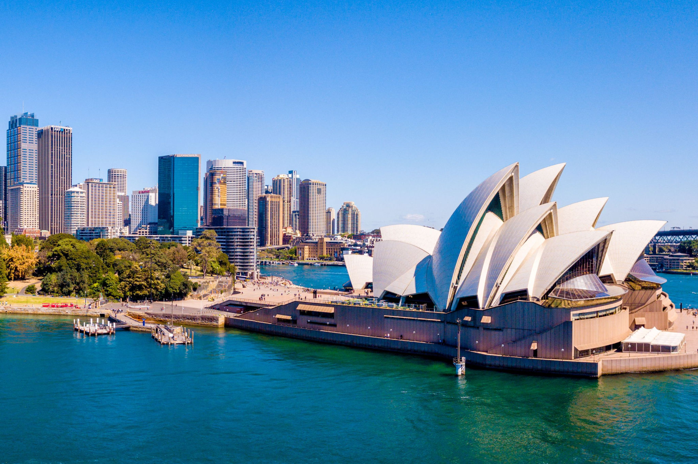
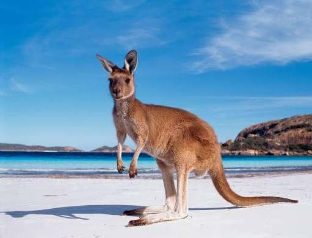
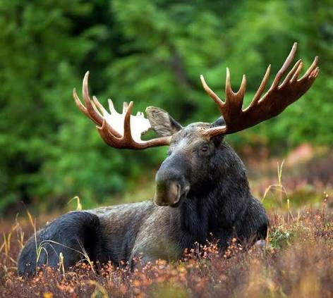

Um pouco Sobre o Sonho
Desde criança, tenho o sonho de viajar para outro país e conhecer uma cultura diferente. Um dos meus maiores objetivos é fazer um intercâmbio na Austrália ou no Canadá, lugares que sempre despertaram minha curiosidade e vontade de conhecer.
Mais do que apenas viajar, gostaria de ter a oportunidade de morar por um período em outro país, estudar e vivenciar uma realidade diferente da que conheço. Acredito que essa experiência seria muito importante para meu crescimento pessoal, pois me ajudaria a sair da minha zona de conforto, conhecer novas pessoas, culturas e formas de pensar.
Outro motivo que torna esse sonho tão importante para mim é a vontade de aprender inglês. Quero conseguir me comunicar melhor no idioma e ter mais confiança para utilizá-lo no dia a dia. Acredito que viver em um país onde o inglês é utilizado diariamente seria uma das melhores formas de desenvolver essa habilidade.
Também vejo o intercâmbio como uma oportunidade para o meu crescimento profissional. Ter uma experiência internacional, estudar fora e desenvolver meu inglês podem contribuir para meu currículo e abrir novas oportunidades no futuro, principalmente na área de tecnologia, que é o caminho profissional que pretendo seguir.
Ainda não sei exatamente quando conseguirei realizar esse sonho, mas pretendo continuar me preparando para que um dia ele se torne realidade. Fazer um intercâmbio representa não apenas conhecer outro país, mas também uma oportunidade de aprender, amadurecer, conquistar novas experiências e me aproximar dos meus objetivos.
Galeria


